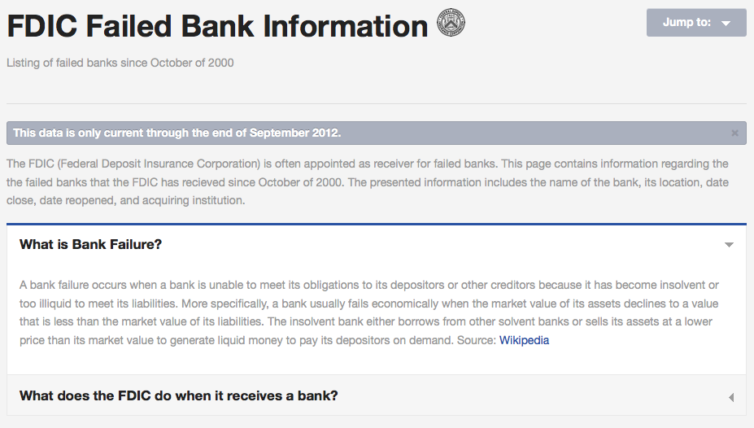
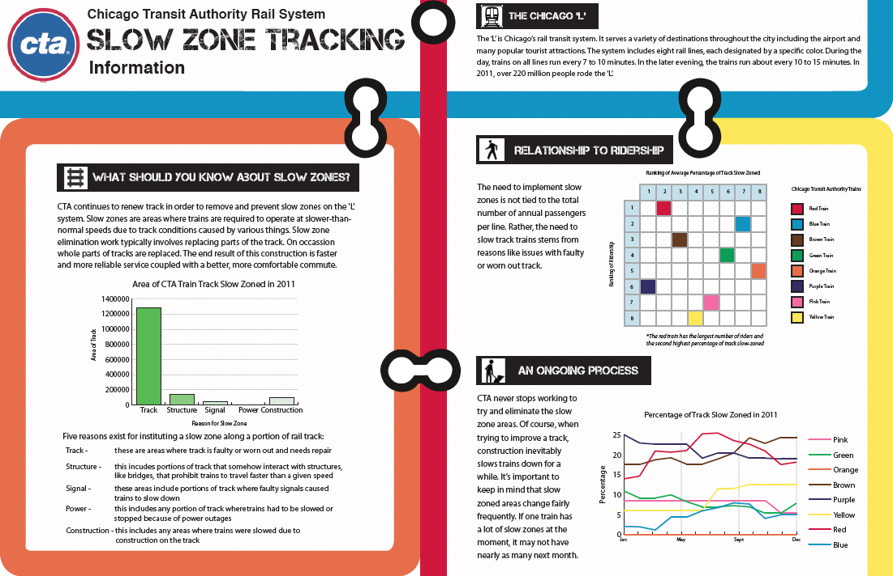
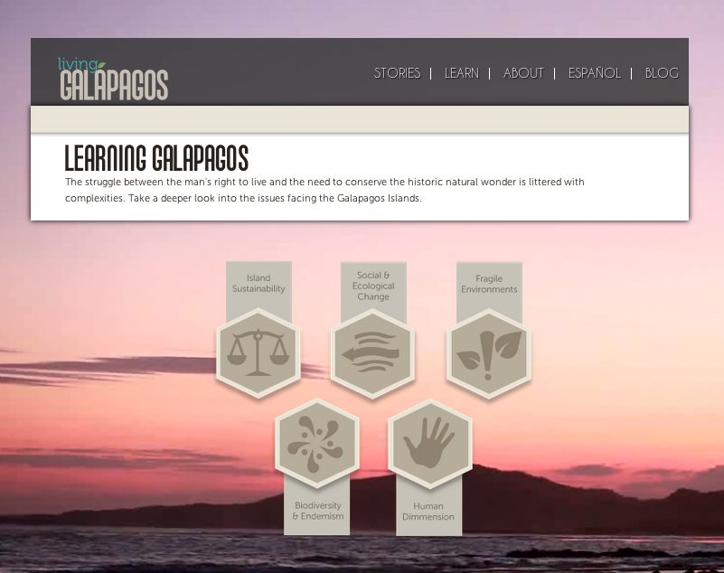
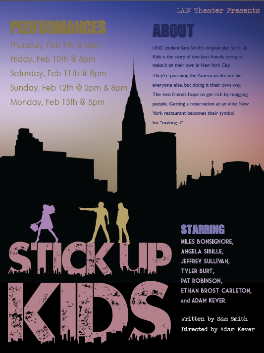

-
API Mashup
The goal of this project was to incorporate multiple APIs, in this case Twitter, Instagram, and Google Maps, to display data about an event. Screenshot of work from the project.

Government Data Driven Dashboard
The goal of this project was to display government data, pulled from an XML document, in a visually appealing and easily understandable way. Screenshot of work from the project.

Webpage Creation from CSS Photoshop Comp
This currently only loads correctly in Firefox. I'm working on it...

-
Infographic About Chicago's L Rail Service
Website Comp Created for a Redesign of the 2009 Living Galapagos Site
Stick Up Kids Poster Created for a Play by a UNC Club
